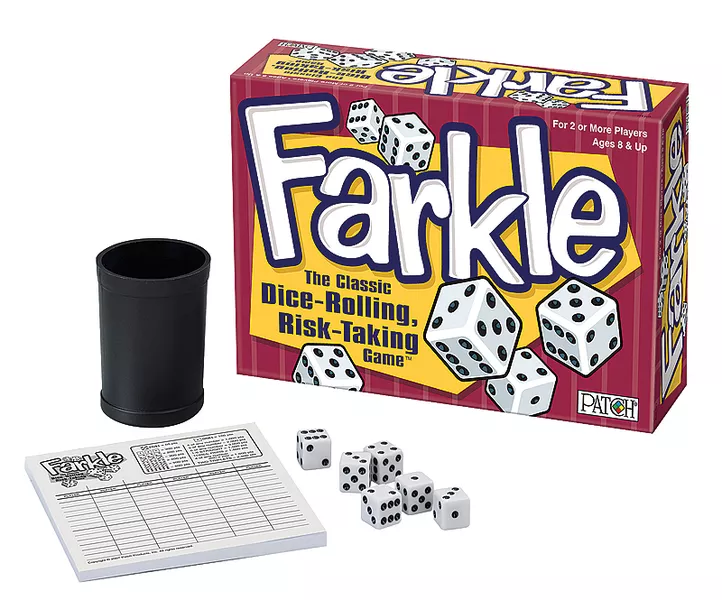
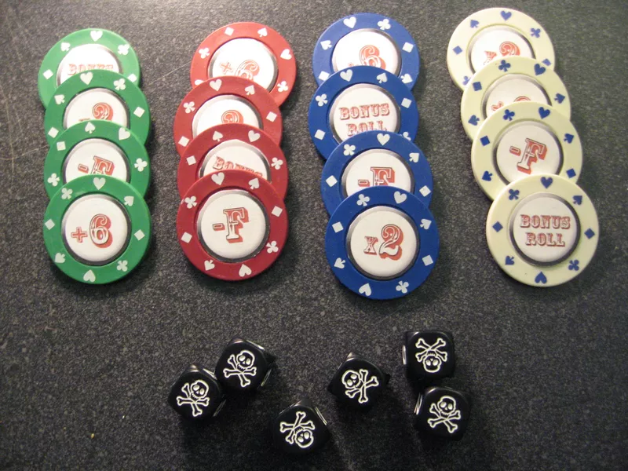

Publishing Info
- Published by: Cardinal, Legendary Games Inc., Patch Products, PlayMonster, Reveal Entertainment Inc., Spin Master Ltd.
- Released: 1996
- Designer: Charlie Potter
Description
Farkel is a proprietary version of the traditional dice game Farkle (or Dix Mille), and is a push-your luck game played with six dice. You roll 6 dice, and remove any dice you want to use for points. You can stop, keeping the points, or re-roll the remaining dice. Points can be scored by specific numbers (e.g. 5 or 1) or sets of the same number. If you can use all six dice for points, pick them all up and keep going. 'Bank' your points and end your turn at any time but beware, some scoring dice must be removed after every roll - if no scoring dice are rolled your turn ends and you score zero points. The highest score over 10,000 wins the game. In 1996, Charlie and Mary Potter, known as "Mr and Mrs Farkel", created a copyrighted scoring system and lodged various trade marks. The scoring system is proprietary to Legendary Games, Inc. Charlie started by selling product made on his kitchen table. Over the course of 10 years, it became a commercial hit. In 2007 Patch launched a version of the game spelled as "Farkle" with almost the same logo design, which soon after they changed.
Genre
- Dice Rolling
- Paper-and-Pencil
- Push Your Luck
- Re-rolling and Locking
- Set Collection
Pictures
 Quote
"It's a push-your-luck dice game, and all of the baggage with that mechanic come with it. It plays decently quick but you either bow out with 300 points on a turn or you get insanely lucky and get 3,000. It's accessible and quick, but those are the only things I can recommend about it. It's fine. I can't say it's my favorite but it really doesn't matter because it's over in 15 minutes.
- Pros: plays quick, very accessible
- Cons:luck based, no way to mitigate luck at all, no strategy whatsoever"
Sources
Source for QuoteBoard Game